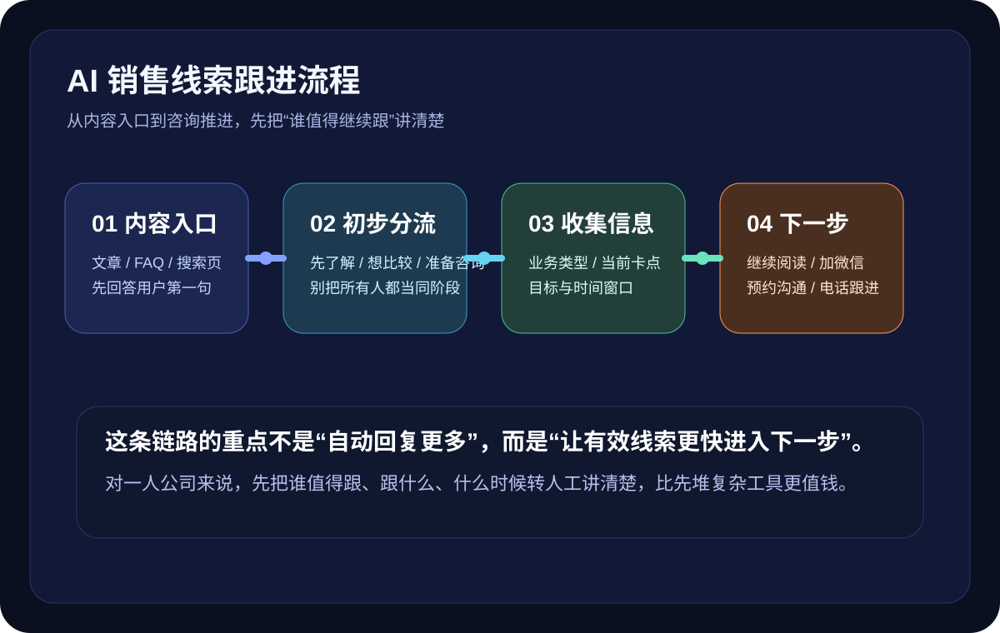

这篇先解决什么
先解决“有人咨询但没继续跟、跟进全靠临场发挥、聊了很多却推不动、每次都从头解释、最后不知道该怎么收口”这几类最常见的问题，再谈复杂自动化。
很多人搜“AI 销售怎么开始”“销售跟进怎么做”，真实卡点往往不是工具，也不是自动化，而是：官网咨询来了以后，多久该回？第一轮回什么？第二轮怎么追？什么时候继续发资料，什么时候该加微信、打电话、给方案、谈报价？如果你是一人公司、轻创业团队或内容负责人，这篇会把最小可执行的销售跟进链路拆给你。

先解决“有人咨询但没继续跟、跟进全靠临场发挥、聊了很多却推不动、每次都从头解释、最后不知道该怎么收口”这几类最常见的问题，再谈复杂自动化。
Harris 的关键词策略强调，先研究用户会怎么搜，再判断背后的意图，最后才决定用哪一页承接。放到销售跟进上也是一样：搜“AI 销售怎么开始”的人，往往不是想看系统功能清单，而是想知道咨询来了以后到底该怎么往下推。Pipedrive 在 follow-up 的公开内容里反复提到，跟进邮件和跟进动作的意义，在于让线索继续留在对话里，并把下一步讲清楚；Shopify 对销售漏斗的解释也很直接，真正要关注的是用户在哪一步犹豫、在哪一步离开、下一步最该修哪里。MBA智库关于销售漏斗和客户旅程的整理则提醒我们：漏斗要有用，前提是过程可观察、数据真实、阶段清楚。对一人公司来说，这意味着最先要补的不是软件，而是“什么时候跟、跟什么、跟完把人带去哪里”这三件事。
重点不是“像大公司一样完整”，而是先跑出一条你自己能持续执行的成交推进链路。
很多跟进失败，不是因为你说得不够，而是因为这轮根本没定义目标。第一轮通常只做 3 件事：确认对方是什么业务、现在最卡哪一步、愿不愿意继续了解。第二轮才进入补资料、回答顾虑、判断意向。第三轮再谈报价、方案、沟通方式。你不需要一开始就把所有信息都问完，只要让每一轮都有一个明确推进动作，跟进就不会散。
Shopify 讲漏斗时，本质是在提醒你：不同阶段的人，需要不同内容和不同推动。对一人公司来说，最简单可用的分层就是冷 / 温 / 热。冷线索还在了解，需要文章、FAQ、案例；温线索已经愿意继续聊，需要你补需求、讲路径、给判断；热线索已经在比较，要推进预约、报价、方案。先做这层分流，你就不会把所有时间都耗在不该深聊的人身上。
Pipedrive 的跟进建议里有个很实用的点：跟进不是把更多话发出去，而是让收件人更容易回复。放到官网咨询和微信沟通里也是一样。你一次别给 5 个动作，只给 1 个最容易答应的下一步，例如“先看这篇案例”“补一下你的当前阶段”“明天下午 15 分钟电话沟通可以吗”。动作越轻、越具体，回复率越高，也越适合一人公司持续执行。
AI 销售并不是永远在聊天框里硬聊，它真正省时间的方式，是把你已经讲过很多次的内容做成固定材料。建议你至少准备 3 类：第一类是解释型内容，回答“你做什么、适合谁、不适合谁”；第二类是判断型内容，回答“现在该先做什么、为什么先做这个”；第三类是推进型内容，例如案例、清单、报价方式、联系入口。这样每次跟进时，AI 和人工都能基于同一套底稿推进，不会前后口径飘来飘去。
MBA智库关于销售漏斗的整理强调，过程要可衡量，才能真正管理。对一人公司来说，最实用的不是复杂评分，而是给每条线索一个简单判断：停——暂时不适合，给文章和长期培育；推——继续推进，明确下一步时间和动作；转——进入人工深聊、报价或方案阶段。只要你每次跟进后都做一次这个判断，时间就不会被无限拉长，AI 也更容易帮你做提醒和摘要。
很多咨询不是质量差，而是等太久自然冷掉了。
回了很多字，但对方不知道该做什么，沟通就会停在原地。
不分阶段，就会把大量时间浪费在还没准备好的人身上。
没有 FAQ、案例、表单或报价依据，跟进只能反复临场发挥。
每条线索都无限跟，会把你自己拖垮，也会让高意向客户被耽误。
先把需求收集对，后面的销售跟进才不会每次从零开始。
如果你想先把冷 / 温 / 热线索分清，这篇可以接着看。
适合继续往“怎么把冷咨询养成熟”这条线再走一步的人。
如果你现在也在做一人公司的官网、内容、FAQ 或咨询承接，可以把现状发来，我们先帮你拆成最小可执行清单。